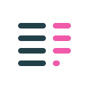
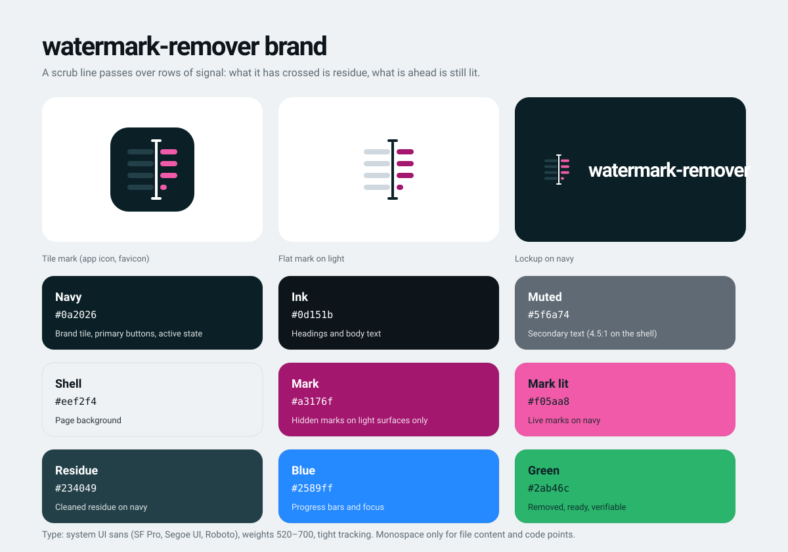
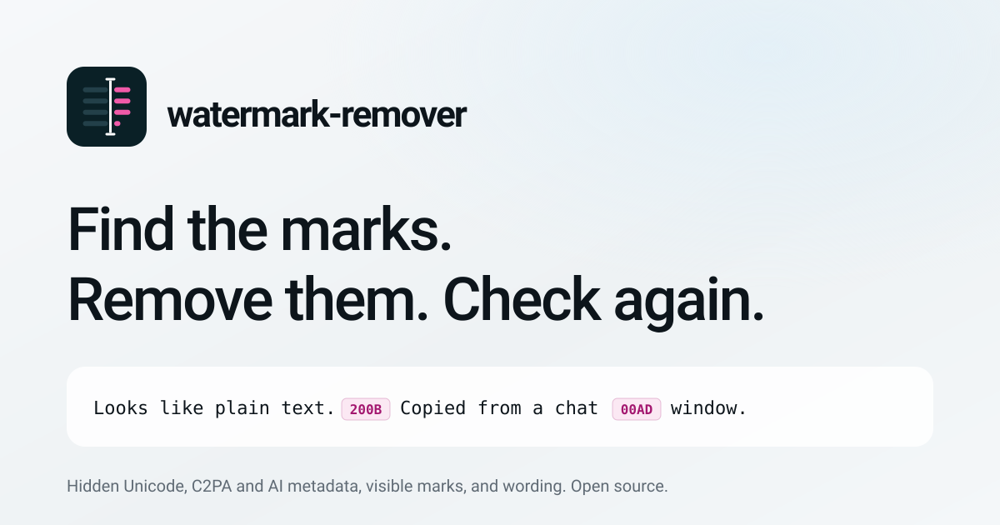
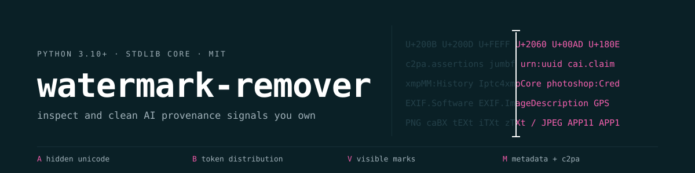

watermark-remover brand kit
Every file here is a plain SVG. The mark is a scrub line passing over rows of signal: what it has crossed is residue, what is ahead is still lit. See README.md for usage rules.
Logos





Brand sheet

Social card (1200×630)

README banner (1200×300)

Interface icons (25)
24px grid, 1.7 stroke, round caps. They use currentColor, so they take the color of the text around them.